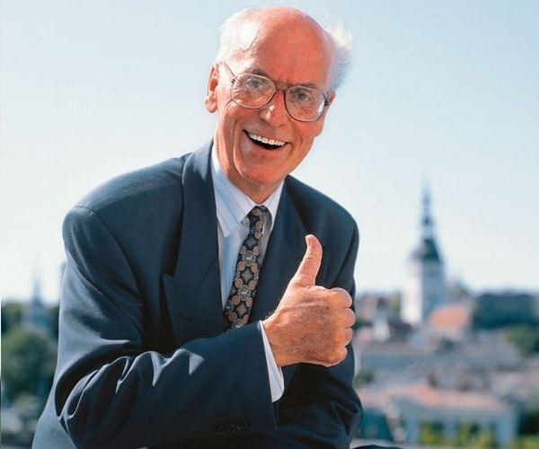

Lennart Georg Meri was born in Tallinn, a son of the Estonian diplomat and later Shakespeare translator Georg Meri, and Estonian Swedish mother Alice-Brigitta Engmann. With his family, Lennart left Estonia at an early age and studied abroad, in nine different schools and in four different languages. However, the family was in Tallinn when Estonia was occupied by the armed forces of the Soviet Union in June 1940. In 1941, the Meri family was deported to Siberia along with thousands of other Estonians, Latvians and Lithuanians sharing the same fate. Heads of the family were separated from their families and shut into concentration camps where few survived. At the age of twelve, Lennart Meri worked as a lumberman in Siberia. He also worked as a potato peeler and a rafter to support his family. The Meri family survived and found their way back to Estonia where Lennart Meri graduated cum laude from the Faculty of History and Languages of the University of Tartu in 1953 at the age of 24. The politics of the Soviet Union did not allow him to work as a historian, so Meri found work as a dramatist in the Vanemuine, the oldest theatre of Estonia, and later on as a producer of radio plays in the Estonian broadcasting industry. Several of his films were released to great critical acclaim. Already as a student, Lennart Meri had been able to earn his living with his writing, after his father had been arrested by the Soviet authorities for the third time. With the help of his younger brother who had been forced to leave his studies and take a job as a taxi driver, he managed to support their mother and to complete his own studies.

Lennart Meri giving a thumbs up with Tallinn, the Estonian capital in the background.
"Traveling is the only passion that doesn't need to feel shy in front of intellect," wrote Meri.
In Estonia, environmental protests soon grew into a general revolt against Soviet rule: the "Singing Revolution", which was led by Estonian intellectuals. Lennart Meri’s speech Do Estonians Have Hope focused on the existential problems of the nation and had strong repercussions abroad. In 1988, Meri became a founding member of the Estonian Popular Front, which cooperated with its counterparts in Latvia and Lithuania. After the first non-communist-style multi-party election in 1990, Meri was appointed to the post of Foreign Minister. As Minister of Foreign Affairs, Lennart Meri’s first task was to create the Ministry of Foreign Affairs. He developed around him a group of well educated young people, many English speaking, in order to establish an open communication channel to the West, and at the same time to represent Estonia more widely on the international scene. He participated in the CSCE Conferences in Copenhagen, New York, Paris, Berlin and Moscow, and the foundation conference of the Council of the Baltic Sea Countries. He also had several meetings with American and European Heads of State and Foreign Ministers, and was the first Eastern European guest to give a presentation at NATO Headquarters in Brussels.
In 1992, Lennart Meri, together with 9 Baltic Ministers of Foreign Affairs and an EU commissioner, founded the Council of the Baltic Sea States (CBSS) and the EuroFaculty.
After a brief period as Ambassador of Estonia to Finland, on 6 October 1992 he became the 2nd President of the Republic of Estonia. Meri was the candidate of the Pro Patria Union. Although, on the first ballot, Arnold Rüütel, a former leading communist and Chairman of the Presidium of the Supreme Council of the Estonian SSR, had led with 42 per cent of the total vote, the final choice for the nomination was made by Parliament, the Riigikogu, which was dominated by the Pro Patria Alliance. During the campaign, some of his opponents tried to bring up questions about Meri's alleged former links with the KGB. However, these allegations did not harm Meri's reputation and public image. Lennart Meri was sworn in as the President on 6 October 1992. On 20 September 1996, he was re-elected for a second and final term.